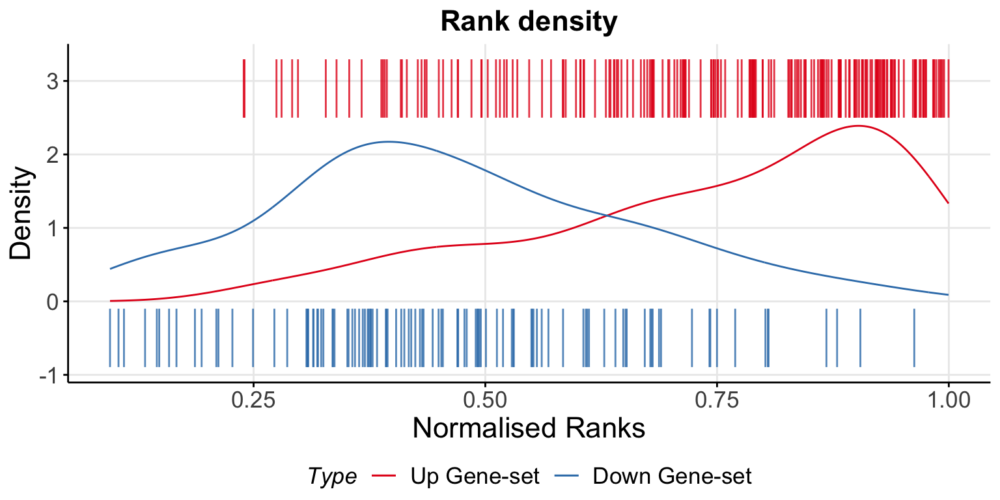
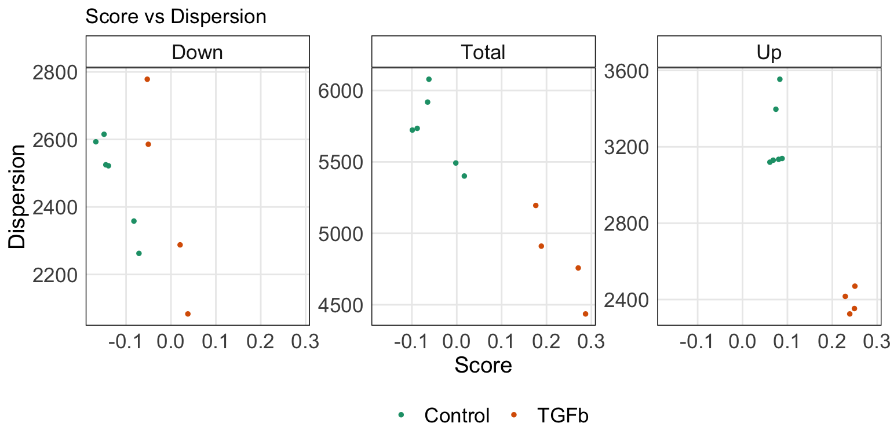
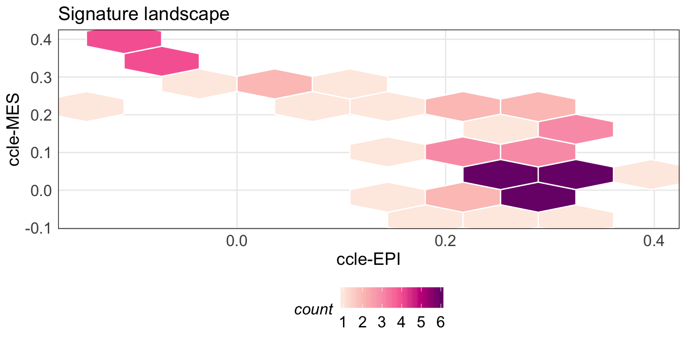
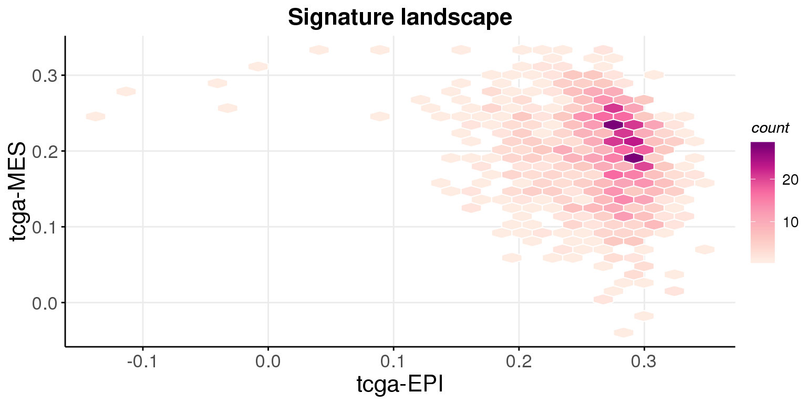
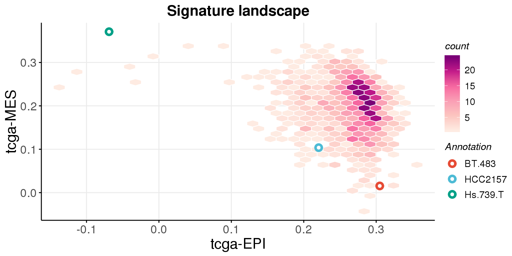
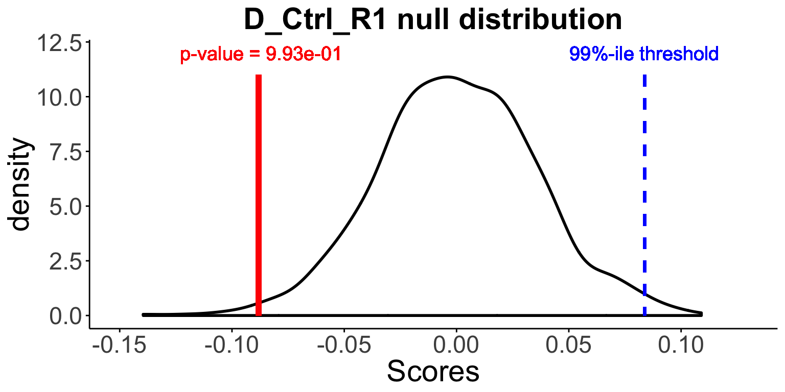
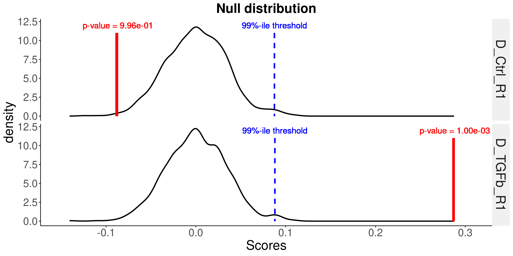

singscore
Ruqian Lyu
2019-10-03
singscore.RmdIntroduction
This vignette demonstrates how to use the functions in R package ‘singscore’ to score a gene expression dataset against a gene set at a single-sample level and provides visualisation functions to improve interpretation of the results.
singscore implements a simple single-sample gene-set (gene-signature) scoring method which scores individual samples independently without relying on other samples in gene expression datasets. It provides stable scores which are less likely to be affected by varying sample and gene sizes in datasets and unwanted variations across samples. The scoring method uses a rank-based statistics and is quick to compute. For details of the methods please refer to the paper (Foroutan et al. 2018). It also provides various visualisation functions to further explore results of the analysis.
Install “singscore” R package
Install ‘singscore’ from Bioconductor
if (!requireNamespace("BiocManager", quietly=TRUE))
install.packages("BiocManager")
BiocManager::install("singscore")The most updated version of ‘singscore’ is hosted on GitHub and can be easily installed using devtools::install_github() function provided by devtools, (https://cran.r-project.org/package=devtools)
# You would need to install 'devtools' package first.
install.packages("devtools")
# And install the 'singscore' package from the GitHub repository
# 'singscore' requires these packages to be installed: methods, stats, graphics, ggplot2, ggsci, grDevices,
# ggrepel, plotly, tidyr, plyr, magrittr, reshape, edgeR, RColorBrewer, Biobase, GSEABase, BiocParallel
devtools::install_github('DavisLaboratory/singscore')
# Set build_vignette = TRUE if would like to browseVignette()##Scoring samples against a gene-set ### Load datasets
To illustrate the usage of ‘simpleScore()’, we first need to load the example datasets. The datasets used in this vignette have been built within the package. You can use the following scripts to load them into your R environment. Detailed steps of obtaining the full datasets are included at the end of the vignette. The ‘tgfb_expr_10_se’ dataset was obtained from (Foroutan et al. 2017) and it is a ten-sample subset of the original dataset. We are going to score the integrated TGFb-treated gene expression dataset (4 cases and 6 controls) against a TGFb gene signature with an up-regulated and down-regulated gene-set pair (Foroutan et al. 2017).
library(singscore)
# The example expression dataset and gene signatures are included in the package
# distribution, one can directly access them using the variable names
# To see the description of 'tgfb_expr_10_se','tgfb_gs_up','tgfb_gs_dn', look at
# their help pages using:
# ?tgfb_expr_10_se
# ?tgfb_gs_up
# ?tgfb_gs_dn
# Have a look at the object tgfb_expr_10_se containing gene expression data
# for 10 samples
tgfb_expr_10_se## class: SummarizedExperiment
## dim: 11900 10
## metadata(0):
## assays(1): counts
## rownames(11900): 2 9 ... 729164 752014
## rowData names(0):
## colnames(10): D_Ctrl_R1 D_TGFb_R1 ... Hil_Ctrl_R1 Hil_Ctrl_R2
## colData names(1): Treatment## [1] "D_Ctrl_R1" "D_TGFb_R1" "D_Ctrl_R2" "D_TGFb_R2" "Hes_Ctrl_R1"
## [6] "Hes_TGFb_R1" "Hes_Ctrl_R2" "Hes_TGFb_R2" "Hil_Ctrl_R1" "Hil_Ctrl_R2"## setName: NA
## geneIds: 19, 87, ..., 402055 (total: 193)
## geneIdType: Null
## collectionType: Null
## details: use 'details(object)'## setName: NA
## geneIds: 136, 220, ..., 161291 (total: 108)
## geneIdType: Null
## collectionType: Null
## details: use 'details(object)'## [1] 193## [1] 108Sample Scoring
To score samples, the gene expression dataset first needs to be ranked using the rankGenes() function which returns a rank matrix. This matrix along with the signatures are then passed to the simpleScore() function which returns a data.frame containing the scores for each sample. When only a single gene-set is available (i.e. not an up- and down- regulated pair), the same function can be called by setting the upSet argument to the gene-set.
# The recommended method for dealing with ties in ranking is 'min', you can
# change by specifying 'tiesMethod' parameter for rankGenes function.
rankData <- rankGenes(tgfb_expr_10_se)
# Given the ranked data and gene signature, simpleScore returns the scores and
# dispersions for each sample
scoredf <- simpleScore(rankData, upSet = tgfb_gs_up, downSet = tgfb_gs_dn)
scoredf## TotalScore TotalDispersion UpScore UpDispersion
## D_Ctrl_R1 -0.088097993 2867.348 0.06096415 3119.390
## D_TGFb_R1 0.286994210 2217.970 0.24931565 2352.886
## D_Ctrl_R2 -0.098964086 2861.418 0.06841242 3129.769
## D_TGFb_R2 0.270721958 2378.832 0.25035661 2470.012
## Hes_Ctrl_R1 -0.002084788 2746.146 0.08046490 3134.216
## Hes_TGFb_R1 0.176122839 2597.515 0.22894035 2416.638
## Hes_Ctrl_R2 0.016883867 2700.556 0.08817828 3138.664
## Hes_TGFb_R2 0.188466953 2455.186 0.23895473 2324.717
## Hil_Ctrl_R1 -0.061991164 3039.330 0.08314254 3553.792
## Hil_Ctrl_R2 -0.064937366 2959.270 0.07433863 3396.637
## DownScore DownDispersion
## D_Ctrl_R1 -0.14906214 2615.306
## D_TGFb_R1 0.03767856 2083.053
## D_Ctrl_R2 -0.16737650 2593.067
## D_TGFb_R2 0.02036534 2287.652
## Hes_Ctrl_R1 -0.08254969 2358.075
## Hes_TGFb_R1 -0.05281751 2778.392
## Hes_Ctrl_R2 -0.07129441 2262.448
## Hes_TGFb_R2 -0.05048778 2585.654
## Hil_Ctrl_R1 -0.14513371 2524.868
## Hil_Ctrl_R2 -0.13927600 2521.903# To view more details of the simpleScore, use ?simpleScore
# Note that, when only one gene set is available in a gene signature, one can
# only input values for the upSet argument. In addition, a knownDirection
# argument can be set to FALSE if the direction of the gene set is unknown.
# simpleScore(rankData, upSet = tgfb_gs_up, knownDirection = FALSE)The returned data.frame consists of the scores for the up- and down- regulated gene-sets along with the combined score (TotalScore). Dispersion is calculated using the mad function by default and can be substituted by passing another function to the dispersionFun argument in simpleScore() such as IQR to calculate the inter-quartile range.
Visualisation and diagnostic functions
In this section, we show example usages of the visualisation functions included in this package.
Plot Rank Densities
Scores of each sample are stored in scoredf. We can use the plotRankDensity function to plot the ranks of genes in the gene-sets for a specific sample. We plot the rank distribution for the second sample in rankData which combines a density plot (densities calculated using KDE) with a barcode plot. Please note that since we are subsetting the data.frame rankData by one column, we set drop = FALSE to maintain the structure of the data.frame/matrix.
# You can provide the upSet alone when working with unpaired gene-sets
# We plot the second sample in rankData, view it by
head(rankData[,2,drop = FALSE])## D_TGFb_R1
## 2 1255
## 9 7611
## 10 1599
## 12 3682
## 13 3599
## 14 10013plotRankDensity(rankData[,2,drop = FALSE], upSet = tgfb_gs_up,
downSet = tgfb_gs_dn, isInteractive = FALSE)## Warning: Ignoring unknown aesthetics: text
Setting isInteractive = TRUE generates an interactive plot using the plotly package. Hovering over the bars in the interactive plot allows you to get information such as the normalised rank (between 0 and 1) and ID of the gene represented by the bar. For the rest of the plotting functions, the isInteractive = TRUE argument has the same behavior.
Plot dispersions of scores
Function plotDispersion generates the scatter plots of the ‘score VS. dispersions’ for the total scores, the up scores and the down score of samples. It requires the scored data.frame from simpleScore function and annotations (via annot parameter) can be used for coloring the points.
# Get the annotations of samples by their sample names
tgfbAnnot <- data.frame(SampleID = colnames(tgfb_expr_10_se),
Type = NA)
tgfbAnnot$Type[grepl("Ctrl", tgfbAnnot$SampleID)] = "Control"
tgfbAnnot$Type[grepl("TGFb", tgfbAnnot$SampleID)] = "TGFb"
# Sample annotations
tgfbAnnot$Type## [1] "Control" "TGFb" "Control" "TGFb" "Control" "TGFb" "Control"
## [8] "TGFb" "Control" "Control"
Plot score landscape
plotScoreLandscape plots the scores of the samples against two different gene signatures in a landscape for exploring their relationships.
There are two styles of the landscape plot (i.e scatter and hexBin plot). When the number of samples in the gene expression dataset is above the default threshold (100), plotScoreLandscape generates a hex bin plot otherwise a scatter plot. The threshold can be modified by changing the hexMin.
In order to better demonstrate the usage of plotScoreLandscape, we load some additional datasets consisting of pre-computed scores of larger public datasets. scoredf_ccle_epi and scoredf_ccle_mes are two scored results of a CCLE dataset (Barretina et al. 2012) against an epithelial gene signature and mesenchymal gene signature (Tan et al. 2014) respectively. For details on how to obtain the dataset please see the section at the end of the vignette.
plotScoreLandscape(scoredf_ccle_epi, scoredf_ccle_mes,
scorenames = c('ccle-EPI','ccle-MES'),hexMin = 10)
Similarly, pre-computed scores for the TCGA breast cancer RNA-seq dataset against epithelial and mesenchymal gene signatures are stored in scoredf_tcga_epi and scoredf_tcga_mes respectively (Tan et al. 2014). The utility of this function is enhanced when the number of samples is large.
tcgaLandscape <- plotScoreLandscape(scoredf_tcga_epi, scoredf_tcga_mes,
scorenames = c('tcga_EPI','tcga_MES'), isInteractive = FALSE)
tcgaLandscape
You can also project new data points onto the landscape plot generated above by using the projectScoreLandscape function. For example, the plot below overlays 3 CCLE samples onto the TCGA epithelial-mesenchymal landscape. Points are labeled with their sample names by default.
# Project on the above generated 'tcgaLandscape' plot
projectScoreLandscape(plotObj = tcgaLandscape, scoredf_ccle_epi,
scoredf_ccle_mes,
subSamples = rownames(scoredf_ccle_epi)[c(1,4,5)],
annot = rownames(scoredf_ccle_epi)[c(1,4,5)],
sampleLabels = NULL,
isInteractive = FALSE)## Warning: Ignoring unknown aesthetics: text
Custom labels can be provided by passing a character vector to the sampleLabels argument.
projectScoreLandscape(plotObj = tcgaLandscape, scoredf_ccle_epi, scoredf_ccle_mes,
subSamples = rownames(scoredf_ccle_epi)[c(1,4,5,8,9)],
sampleLabels = c('l1','l2','l3','l4','l5'),
annot = rownames(scoredf_ccle_epi)[c(1,4,5,8,9)],
isInteractive = FALSE)## Warning: Ignoring unknown aesthetics: text
Estimate empirical p-values for the obtained scores in individual samples and plot null distributions
Permutation test
Hypothesis testing of the calculated scores is performed using a permutation test. The null hypothesis is that the gene-set is not enriched in the sample. For each sample, gene labels are randomly shuffled and scores computed against the gene-set. This is done \(B\) times to generate the null distribution. The generateNull() function computes these for multiple samples (\(n\)) simultaneously resulting in an \(n \times B\) matrix with permuted scores along the columns for each sample.
The permutation function has parallel computing features provided by using BiocParallel
# tgfb_gs_up : up regulated gene set in the tgfb gene signature
# tgfb_gs_dn : down regulated gene set in the tgfb gene signature
# This permutation function uses BiocParallel::bplapply() parallel function, by
# supplying the first 5 columns of rankData, we generate Null distribution for
# the first 5 samples.
# detect how many CPU cores are available for your machine
# parallel::detectCores()
ncores <- parallel::detectCores() - 2
# Provide the generateNull() function the number of cores you would like
# the function to use by passing the ncore parameter
permuteResult <- generateNull(upSet = tgfb_gs_up, downSet = tgfb_gs_dn,
rankData = rankData[,1:5], centerScore = TRUE,
knownDirection = TRUE, B = 1000, ncores = ncores,
seed = 1, useBPPARAM = NULL)
# Note here, the useBPPARAM parameter allows user to supply a BPPARAM variable
# as a parameter which decides the type of parallel ends to use.
# such as
# snow <- BiocParallel::SnowParam(type = "SOCK")
# permuteResult <- generateNull(upSet = tgfb_gs_up, downSet = tgfb_gs_dn,
# rankData[,1:5], B = 1000, seed = 1,ncores = ncores, useBPPARAM = snow)
# If you are not sure about this, just leave the value as NULL and set how many
# CPU cores to use via the ncores argument. It will use the default parallel
# backend for your machine.
# For more information, please see the help page for ?generateNull()
# Please also note that one should pass the same values to the upSet,
# downSet, centerScore and knownDirection arguments as what they provide
# for the simpleScore() function to generate a proper null distribution.
head(permuteResult)## D_Ctrl_R1 D_TGFb_R1 D_Ctrl_R2 D_TGFb_R2 Hes_Ctrl_R1
## 1 -0.02030507 -0.009383811 -0.02062905 -0.01173004 -0.02320462
## 2 0.02755818 0.036042034 0.02835351 0.03286948 0.02647991
## 3 0.00894936 0.021715906 0.01098180 0.02048539 0.01599267
## 4 0.01781341 0.034220520 0.02108119 0.03512162 0.01977626
## 5 0.01228818 0.017883986 0.01094838 0.01777007 0.01147985
## 6 -0.01927235 -0.016925081 -0.01879323 -0.01880296 -0.01828970Estimate empirical p-values
\(p\)-values can be estimated using the getPvals() function by providing the null distributions calculated above. Unless all permutations are exhausted (mostly infeasible), the minimum \(p\)-value obtained is \(\frac{1}{B}\).
pvals <- getPvals(permuteResult,scoredf[1:5,,drop = FALSE])
# getPval returns p-values for each individual sample.
# show the p-values for first 5 samples
pvals## D_Ctrl_R1 D_TGFb_R1 D_Ctrl_R2 D_TGFb_R2 Hes_Ctrl_R1
## 0.992 0.001 0.996 0.001 0.531Plot null distribution
Plot the null distributions for the first sample with the estimated \(p\)-value labelled. The function uses the sampleNames parameter to decide which samples to plot.

You can provide multiple sample names to plot these samples in one plot. For example, plot the first 2 samples.
# plot the null distributions for the first 2 samples and the p-values
# We can see from the plot, the control samples are not significant and TGFb
# samples are very significant with very low p-values
plotNull(permuteResult,scoredf,pvals,sampleNames = names(pvals)[1:2])## Using as id variables
More on the datasets
-
TGFb-EMT data
In the examples above, we loaded a gene expression matrix data
tgfb_expr_10_se. This dataset is a ten-sample subset of a full dataset originally from the integrated TGFb-EMT data published by (Foroutan et al. 2017). The full dataset can be accessed here https://figshare.com/articles/comBat_corrected_Foroutan_et_al_2017/5682862. Thetgfb_gs_upandtgfb_gs_dnare the derived up-regulated/down-regulated genes of the TGFb-induced EMT gene signature by (Foroutan et al. 2017) (see Table S1. TGFβ-EMT signature). CCLE dataset
scoredf_ccle_epi and scoredf_ccle_mes are two data frames of the pre-computed scores using The Cancer Cell Line Encyclopaedia (CCLE) breast cancer cell line RNA-seq dataset (Barretina et al. 2012). The CCLE dataset was normalised by TPM and can be downloaded from https://www.synapse.org/#!Synapse:syn5612998 Cell lines were scored against the epithelial and mesenchymal gene signatures, which were obtained from (Tan et al. 2014) and can be found in the ‘Table S1B. Generic EMT signature for cell line’ in the supplementary files.
-
TCGA cancer samples dataset
scoredf_tcga_epiandscoredf_tcga_mesare two data frames of the pre-computed scores using The Cancer Genome Atlas (TCGA) breast cancer RNA-seq data (RSEM normalised) (The Cancer Genome Atlas Network 2012) against the epithelial and mesenchymal gene signatures respectively. The gene signatures were obtained from (Tan et al. 2014) and can be found in the ‘Table S1A. Generic EMT signature for tumour’. The TCGA dataset was downloaded from The UCSC Cancer Genomics Browser in February 2016 (https://genome-cancer.ucsc.edu)
## TotalScore TotalDispersion
## HCC2157 0.22060031 5926.693
## AU565 0.30387843 3884.412
## UACC.893 0.30615947 3527.847
## BT.483 0.30493150 4158.693
## Hs.739.T -0.06886754 4281.007
## HCC2218 0.31230039 3331.402## TotalScore TotalDispersion
## TCGA.3C.AAAU.01 0.2722128 3952.612
## TCGA.3C.AALI.01 0.3209824 2835.472
## TCGA.3C.AALJ.01 0.2531933 4174.260
## TCGA.3C.AALK.01 0.3042650 3234.292
## TCGA.4H.AAAK.01 0.2682847 4222.445
## TCGA.5L.AAT0.01 0.2560761 4132.747Session Info
## R version 3.6.1 (2019-07-05)
## Platform: x86_64-pc-linux-gnu (64-bit)
## Running under: CentOS Linux 7 (Core)
##
## Matrix products: default
## BLAS: /stornext/System/data/apps/R/R-3.6.1/lib64/R/lib/libRblas.so
## LAPACK: /stornext/System/data/apps/R/R-3.6.1/lib64/R/lib/libRlapack.so
##
## locale:
## [1] LC_CTYPE=en_US.UTF-8 LC_NUMERIC=C
## [3] LC_TIME=en_US.UTF-8 LC_COLLATE=en_US.UTF-8
## [5] LC_MONETARY=en_US.UTF-8 LC_MESSAGES=en_US.UTF-8
## [7] LC_PAPER=en_US.UTF-8 LC_NAME=C
## [9] LC_ADDRESS=C LC_TELEPHONE=C
## [11] LC_MEASUREMENT=en_US.UTF-8 LC_IDENTIFICATION=C
##
## attached base packages:
## [1] stats4 parallel stats graphics grDevices utils datasets
## [8] methods base
##
## other attached packages:
## [1] singscore_1.5.1 GSEABase_1.46.0 graph_1.62.0
## [4] annotate_1.62.0 XML_3.98-1.20 AnnotationDbi_1.46.0
## [7] IRanges_2.18.2 S4Vectors_0.22.1 Biobase_2.44.0
## [10] BiocGenerics_0.30.0 BiocStyle_2.12.0
##
## loaded via a namespace (and not attached):
## [1] edgeR_3.26.5 tidyr_0.8.3
## [3] bit64_0.9-7 assertthat_0.2.1
## [5] BiocManager_1.30.4 blob_1.1.1
## [7] GenomeInfoDbData_1.2.1 ggrepel_0.8.1
## [9] yaml_2.2.0 pillar_1.4.2
## [11] RSQLite_2.1.1 backports_1.1.4
## [13] lattice_0.20-38 limma_3.40.2
## [15] glue_1.3.1 digest_0.6.20
## [17] RColorBrewer_1.1-2 GenomicRanges_1.36.1
## [19] XVector_0.24.0 colorspace_1.4-1
## [21] plyr_1.8.4 htmltools_0.3.6
## [23] Matrix_1.2-17 pkgconfig_2.0.2
## [25] bookdown_0.11 zlibbioc_1.30.0
## [27] purrr_0.3.2 xtable_1.8-4
## [29] scales_1.0.0 BiocParallel_1.18.1
## [31] tibble_2.1.3 ggplot2_3.2.0
## [33] SummarizedExperiment_1.14.1 hexbin_1.27.3
## [35] lazyeval_0.2.2 magrittr_1.5
## [37] crayon_1.3.4 memoise_1.1.0
## [39] evaluate_0.14 fs_1.3.1
## [41] MASS_7.3-51.4 xml2_1.2.0
## [43] tools_3.6.1 matrixStats_0.55.0
## [45] stringr_1.4.0 locfit_1.5-9.1
## [47] munsell_0.5.0 DelayedArray_0.10.0
## [49] compiler_3.6.1 pkgdown_1.3.0
## [51] GenomeInfoDb_1.20.0 rlang_0.4.0
## [53] grid_3.6.1 RCurl_1.95-4.12
## [55] rstudioapi_0.10 labeling_0.3
## [57] bitops_1.0-6 rmarkdown_1.13
## [59] gtable_0.3.0 reshape_0.8.8
## [61] DBI_1.0.0 roxygen2_6.1.1
## [63] reshape2_1.4.3 R6_2.4.0
## [65] knitr_1.23 dplyr_0.8.3
## [67] bit_1.1-14 commonmark_1.7
## [69] rprojroot_1.3-2 desc_1.2.0
## [71] stringi_1.4.3 Rcpp_1.0.2
## [73] tidyselect_0.2.5 xfun_0.8References
Barretina, Jordi, Giordano Caponigro, Nicolas Stransky, Kavitha Venkatesan, Adam A Margolin, Sungjoon Kim, Christopher J Wilson, et al. 2012. “The Cancer Cell Line Encyclopedia Enables Predictive Modelling of Anticancer Drug Sensitivity.” Nature 483 (7391): 603–7.
Foroutan, Momeneh, Dharmesh D Bhuva, Ruqian Lyu, Kristy Horan, Joseph Cursons, and Melissa J Davis. 2018. “Single Sample Scoring of Molecular Phenotypes.” BMC Bioinformatics 19 (1). BioMed Central: 404. https://doi.org/10.1186/s12859-018-2435-4.
Foroutan, Momeneh, Joseph Cursons, Soroor Hediyeh-Zadeh, Erik W Thompson, and Melissa J Davis. 2017. “A Transcriptional Program for Detecting Tgfbeta-Induced Emt in Cancer.” Molecular Cancer Research. American Association for Cancer Research. https://doi.org/10.1158/1541-7786.MCR-16-0313.
Tan, Tuan Zea, Qing Hao Miow, Yoshio Miki, Tetsuo Noda, Seiichi Mori, Ruby Yun-Ju Huang, and Jean Paul Thiery. 2014. “Epithelial-Mesenchymal Transition Spectrum Quantification and Its Efficacy in Deciphering Survival and Drug Responses of Cancer Patients.” EMBO Molecular Medicine 6 (10). Oxford, UK: BlackWell Publishing Ltd: 1279–93. https://doi.org/10.15252/emmm.201404208.
The Cancer Genome Atlas Network. 2012. “Comprehensive Molecular Portraits of Human Breast Tumors.” Nature 490 (7418): 61–70. https://doi.org/10.1038/nature11412.